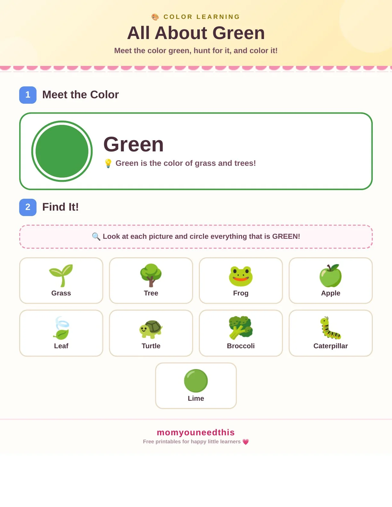

Green Color Worksheets For Kids Practice Identifying And Naming The Color Green
Quick Answer
This free printable green color worksheet helps toddlers and preschoolers learn to identify and name the color green. Kids find, trace, and color green objects like grass and frogs. Green is a secondary color — made by mixing blue and yellow — and it is the color of living things: the most abundant color in nature. Download and print at home with no signup needed — go-green learning fun for ages 2 to 4.
Fresh as spring grass — these green worksheets help your child spot and name the color green with confidence.
🟢 Learn The Color Green
Green is the color of outside. Grass, leaves, frogs, turtles, peas, cucumbers, traffic lights saying go — a child's world is landscaped in green, and this worksheet turns that abundance into fluency: green-object hunts, tracing the word green, and coloring activities, all in nature's favorite color.
Green is also the first color on these pages with a recipe your child can watch: blue and yellow paint, mixed, become green. That small miracle — two colors making a third — is worth doing live before or after the worksheet (the tip below explains), because a color you have manufactured is a color you understand, not just recognize.

🖨️ Download Your Free Green Color Printable
Print it out, grab the crayons, and you're ready — no signup needed.
⬇️ Download Free Printable 🖨️ Print(opens in new tab)🎁 Free printable for toddlers & preschoolers
🔍 Step Outside
Green is everywhere outdoors. After the worksheet, walk outside and count green things together — leaves, grass, bushes. Nature is the best green teacher, and the count usually passes twenty before the end of the street.
Bring the hunt indoors afterward and it gets interesting: green is scarcer inside — a houseplant, peas in the freezer, a green book spine, toothpaste. The contrast teaches something true about the color: green belongs to living, growing things, which is why the outdoors is carpeted in it and the kitchen mostly is not.
💡 Why Learn Colors One At A Time?
Green is often the first secondary color children learn, and it is a lovely chance to show that blue and yellow make green — a first peek at color mixing that feels like a magic trick with a recipe.
Learning colors one at a time gives that recipe somewhere to land: blue and yellow must each be known before their mixture means anything. Once green is solid, your child owns a primary pair AND their child color — the family structure of the whole crayon box starts to make sense.
📚 Keep Exploring
Discover more free color activities, printables, and learning ideas created for busy parents.
🎁 Back to Color Identification🟢 All About Green — Nature's Color, Mixed From Blue And Yellow
Green is a secondary color: blue + yellow = green, every time, in paint, crayon wax shavings, or playdough. It is also the color plants wear to eat sunlight — chlorophyll, the green pigment in leaves, is how plants feed themselves — so green is not just nature's decoration, it is nature's machinery. A child pointing at a leaf is pointing at a tiny solar-powered food factory wearing its working color.
Green's range runs from pale mint to deep forest, and its meanings are the most agreed-on of any color: go (traffic lights worldwide), fresh, growing, and — in a pea or a frog — alive. Its animal team is charming: frogs, turtles, parrots, caterpillars, and green-eyed cats.
The mixing experiment, done right: give your child blue and yellow finger paint on a tray and let the swirl happen slowly — the green appears at the border first, like a tide line. Name it when it arrives. Then hand over this worksheet: the color they just invented now has a page of its own, and color learning rarely gets more satisfying than that.
❓ Frequently Asked Questions
What is on the green color worksheet?
Green-object hunts, tracing the word green, and coloring pages — everything about the color green. Kids practice with grass, frogs, leaves, and the blue-plus-yellow mixing story that makes green a family color. Kids practice with grass, frogs, leaves, and the blue-plus-yellow mixing story that makes green a family color.
Are these color worksheets really free?
Yes — every printable on MomYouNeedThis is 100% free to download and print. No signup, no payment, just tap the download button. Try the blue and yellow worksheets first if your child has not met them — green's mixing story lands best when its two parent colors are already friends. Try the blue and yellow worksheets first if your child has not met them — green's mixing story lands best when its two parent colors are already friends.
Can I teach color mixing with this?
They can point to green objects when asked and name the color green without prompting — outdoors especially, where green lives. The bonus mastery sign: they can tell you how green is made (blue and yellow mixed), which means the color is understood, not just spotted.
💜 More Color Fun You'll Love
Keep the color learning going with these related activities.
🟡 Yellow Color 🔵 Blue Color 🟤 Brown Color